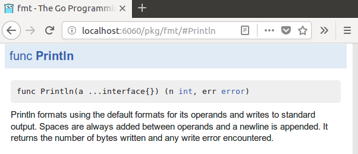

Go: Package documentation
The GoDoc website hosts documentation for Go packages on Bitbucket, GitHub, Google Project Hosting and Launchpad:
Godoc command
The godoc command extracts and generates documentation for all locally installed Go programs, both your own code and the standard libraries.
The command
$ godoc -http=:6060 &starts a web server that presents the documentation at http://localhost:6060/:

The documentation is tightly coupled with the code. For example, you can navigate from a function's documentation to its implementation with a single click.
Without the -http flag, godoc prints plain text documentation to standard output:
$ godoc fmt Println
func Println(a ...interface{}) (n int, err error)
Println formats using the default formats for its operands and writes to
standard output. Spaces are always added between operands and a newline
is appended. It returns the number of bytes written and any write error
encountered.
Create documentation
To document a function, type, constant, variable, or even a complete package, write a regular comment directly preceding its declaration, with no blank line in between. For example, this is the documentation for the fmt.Println function:
// Println formats using the default formats for its operands and writes to standard output.
// Spaces are always added between operands and a newline is appended.
// It returns the number of bytes written and any write error encountered.
func Println(a ...interface{}) (n int, err error) {
…
For best practices on how to document Go code, see Effective Go: Commentary.
Godoc examples
You can add example code snippets to the package documentation; this code is verified by running it as a test. For more information on how to create such testable examples, see The Go Blog: Testable Examples in Go.